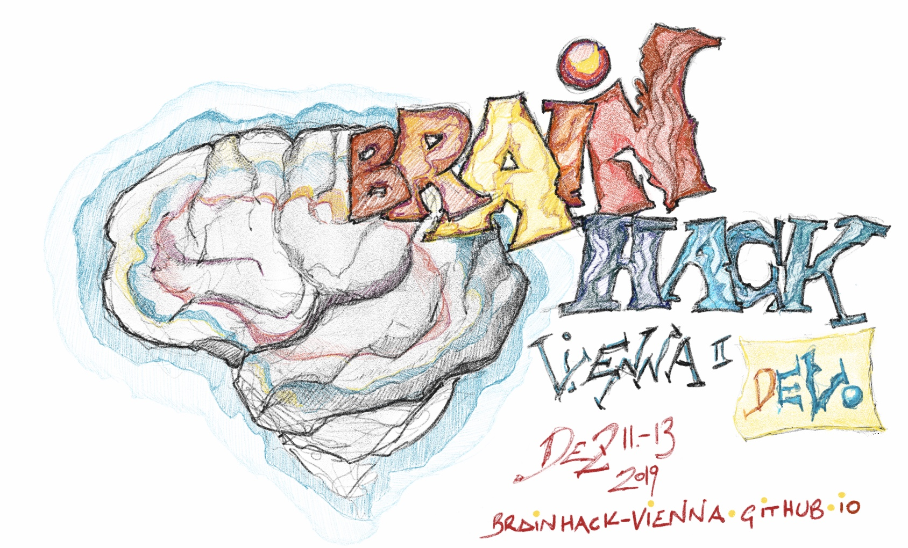
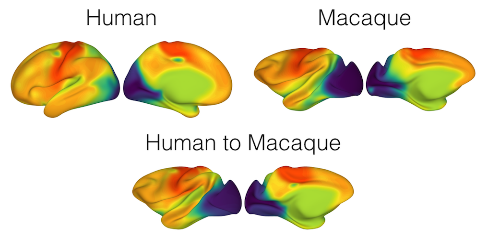
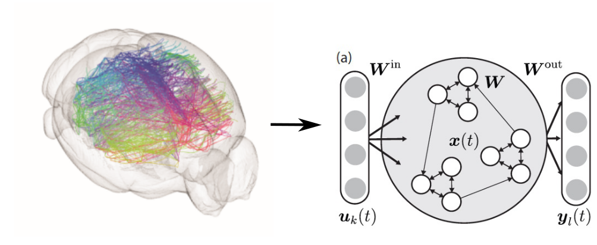
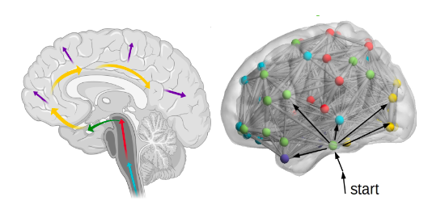
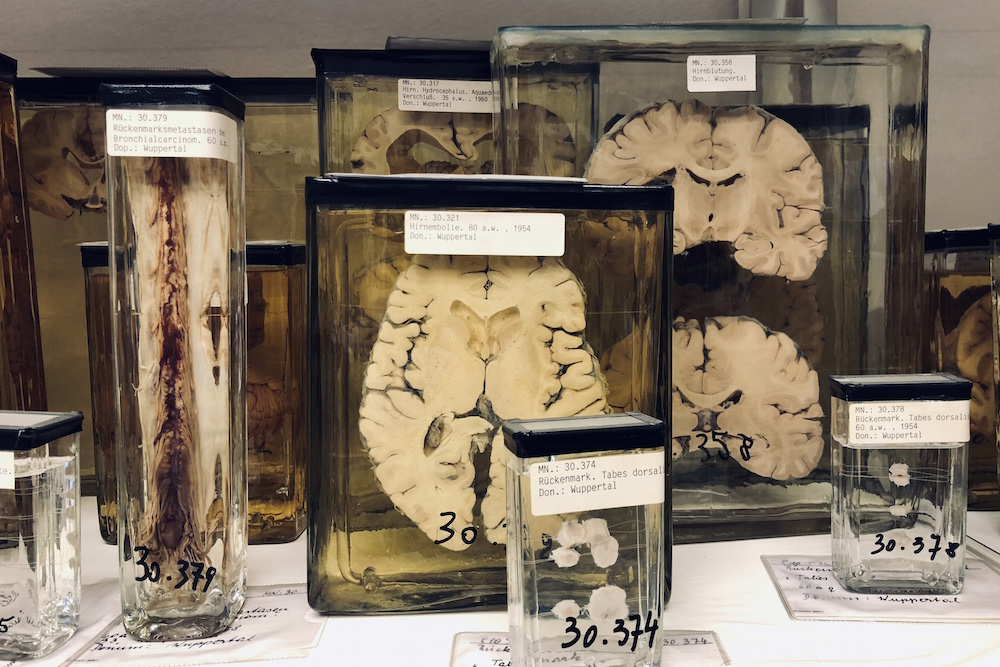

Brainhack Vienna
Evolution and Development
December 11 - 13, 2019

Brainhack Vienna
Brainhack Vienna will orbit around the EvoDevo theme.
We aim to bring together a diverse crowd of neuroscientists, computer scientists, neuroimaging geeks, evolutionary biologists, antropologists and developmental scientists to tackle exciting interdisciplinary problems across the fields.
The brainhack will include unconference talks and lots of hacking on various datasets, dataset mergers and non-coding projects.
Registration
Participation will cost 50€ to cover breakfast, lunch, coffee breaks and social dinner.
Schedule (tentative)
Location
Complexity Science Hub Vienna
Josefstädter Straße 39
1080 Wien
Example Projects
Coding and Non-Coding Projects welcomed
Cross-Species Alignment
The aim of this project is to quantify shared patterns of functional connectivity across species, and use them for cortical surface alignment.
Contact: Karl-Heinz Nenning

Fetal EvoDevo
In this project, we work on a bio-mechanically constrained image-based model of human fetal brain development and try to relate the cortical expansion to other evolutionary of developmental processes.
Contact: Ernst Schwartz

Bio2Art: converting biological to artificial neuronal networks
Create a Python library for fast, easy and flexible conversion of data correspoding to biological neuronal networks to artificial neuronal networks in a ready-to-be-trained format.
Contact: Alexandros Goulas

Spreading of misfolded proteins through the connectome (application to Alzheimer's and Parkinson's patients)
Contact: Alessandro Crimi

Connectomics have been used so far to look for quantifying global and local differences in the functional or structural brain networks. Very few studies have used connectomes to investigate the spreading of misfolded proteins which is at the basis of Parkinson’s (PD) and Alzheimer’s disease (AD). It is believed that diseases as AD and PD are spread by misfolded proteins or agents which moves along brain connections (axons and dendrides of the neurons) starting from specific regions to others. For instance, AD has a progression of tau pathology consistently beginning in the entorhinal cortex, the locus coeruleus, and other nearby noradrenergic brainstem nuclei, before spreading to the rest of the limbic system as well as the cacingulate and retrosplenial cortices. While Parkinsons starts from the brainstem and spread to the neocortex. During previous studies we compared the developed tools in a novel manner validating real datasets (ADNI and PPMI). Now we want to try other methods for predicting tau deposit or atrophy. In particular, we want to simulate deposits/spreading of misfolded proteins proceeding via the brain’s anatomic connectivity network via Autoregressive models or anything proposed by you. We will use human data provided by the supervisors.
A Visit of Narrenturm
The Narrenturm (Fool's Tower) in Vienna is continental Europe's oldest building for the accommodation of psychiatric patients. Built in 1784, it is next to the site of the old Vienna General Hospital, and is now home to the Federal Pathologic-Anatomical Museum Vienna
Information
What is a Brainhack?
"These collaborative workshops combine elements of Hackathons and Unconferences, with a variety of educational activities, to accelerate the adaptation of data science and computational methods in Neuroscience. Much of the conference is allocated to open working time during which attendees are encouraged to work together in interdisciplinary teams on projects that utilize computational techniques to solve problems in neuroscience. Periodic unconference sessions provide an opportunity for attendees to share their expertise on topics that become relevant through the course of the event."
https://www.brainhack.org
Who can participate?
Everyone is invited to participate! Brainhack events welcome researchers from every academic background and career stage interested in the brain. Each local event is encouraged to accept participants from diverse backgrounds. Although previous knowledge of neuroscience analysis software tools and methods is beneficial, it is not a requirement, and participation in Brainhack events can take on many forms. If you want to get involved, there’s a place for you.
Do I have to propose a project?
It is not obligatory to propose a project. But you often get more out of a brainhack if you propose your own project. Coding and non-coding projetcs are welcomed!
Get in Touch
-
brainhack.vienna (at) gmail.com
-
Local organizers
Georg Langs
Ernst Schwartz
Karl-Heinz Nenning
Roxane Licandro
© Brainhack Vienna. powered by HTML5 UP.